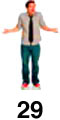
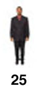
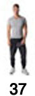
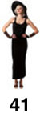

Monday, Wednesday, and Friday, this is the scene on the sidewalk in front of Code Fellows.




Problem: Numbers are all mixed up and the shrill Thai lady in the D-Jung on Wheels truck does not know which direction to yell when an order is ready, so she yells as loud as she can, ruining her voice AND destroying the eardrums of everyone.
If the order number cards range between 23 and 42, she could yell to the left (a number in the 20s) or right (a number in the 30s or 40s) when a customer's delicious Pad Kee Mao or Thai iced tea is ready. A sorted sidewalk would make her life easier and the rest of us a lot less jumpy.
Let's fix this mess with an ineffecient, yet naturally human, INSERTION SORT:
Starting at the far left, a comparator position moves one spot to the right on each sort sequence.
In that sequence, if that person compares her/his number to the one at her/his right, or our left.
If the comparator's number is greater, the two stay in position.
If the comparator's number is lower, they switch positions and the comparator then tests against the next person in line in the same way until reaching a position where s/he is properly positioned (so far). The sort sequence then restarts at the next spot down the line.